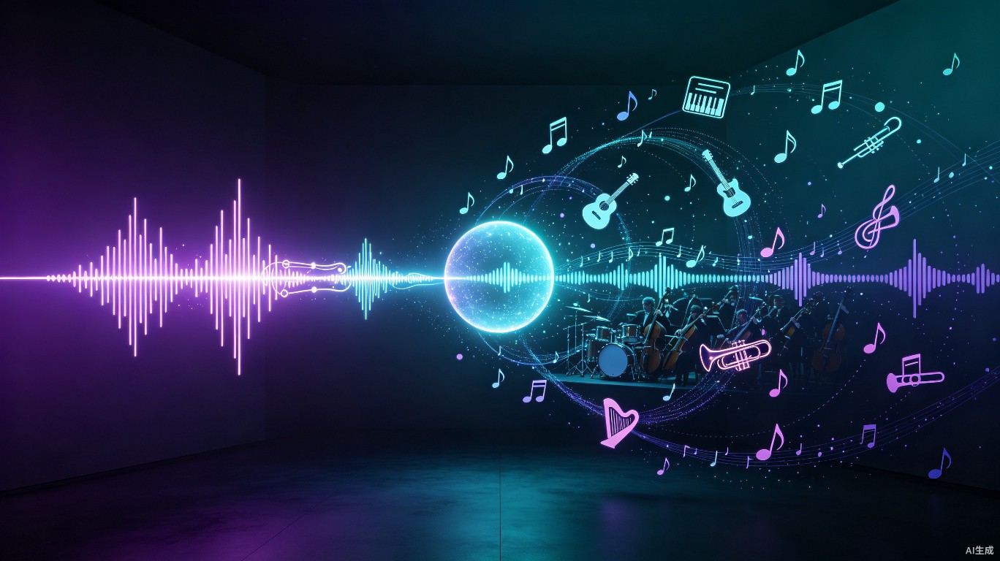

用你的旋律，创作一首完整的歌。
哼唱一段旋律，AI 帮你变成带人声、伴奏、歌词的完整歌曲。
你在洗澡时哼了一段旋律，在地铁上用口哨吹了一段调子，或者在吉他上弹了几个和弦——它们听起来都不错，但仅此而已。你不会编曲，不会混音，更找不到歌手来唱你写的词。一段可能成为热门歌曲的旋律，就这样消失了。
普通人脑中有旋律却无法产出完整歌曲。专业音乐制作门槛极高：编曲、录制、混音、人声，每一步都需要专业技能和昂贵设备。
现有 AI 音乐工具（Suno、Udio）都是"输入文字描述 → 生成歌曲"，用户的旋律参与度为零。我们想做的正好相反：用户贡献旋律，AI 负责剩下的全部。
一个 Web 端 AI 音乐制作平台。上传哼唱/口哨/乐器旋律，系统自动分析并生成带人声演唱、多轨伴奏、AI 歌词、专业混音的完整歌曲。全程可视化参数调节，像 DAW 一样精细。
有旋律灵感但缺乏编曲能力。用 Mustrix 把脑中的旋律快速变成 Demo，验证创意方向，再进入专业 DAW 精修。
需要原创背景音乐但不会乐理。哼一段旋律，30 秒生成带歌词的原创歌曲，直接用于视频，无需担心版权问题。
想理解编曲、和声、混音的原理。通过调节 9 维参数实时听效果，像交互式教材一样学习音乐制作的每个环节。
纯粹想体验"创作一首属于自己的歌"的快乐。不会乐器、不懂乐理，只要会哼旋律就够了。
上传一段旋律音频，系统自动执行七步生成管线，每一步都可通过前端实时查看进度。
用 librosa pYIN 算法从音频中提取 MIDI 音符序列
自动检测调性、BPM、拍号、旋律走向、音域范围
将分析结果与用户参数融合，生成标准化配置
MIDI 编曲引擎生成多轨伴奏，同时 DeepSeek 生成歌词
DiffRhythm 扩散模型根据歌词 + 旋律生成演唱人声
伴奏渲染 + 人声混音，应用动态/声像/纵深三维处理
输出最终 MP3/WAV 文件并存储
从节奏到混音，覆盖音乐制作的完整参数链。简易模式用预设快速出歌，进阶模式展开全部精细参数。
| 维度 | 简易模式 | 进阶模式 |
|---|---|---|
| 节奏 | 速度预设 · BPM(60-200) · 拍号(5种) | Swing摇摆 · 节拍模式(3种) |
| 和声 | 调性(12调) · 音阶(5种) · 和弦进行(5种) | 和声复杂度(3级) |
| 伴奏 | 风格(8种) · 乐器选择(26种) | 密度(0-100%) · 能量值(0-100%) |
| 音色 | 人声性别(3种) · 音色(6种) | 合成方式(3种) |
| 结构 | 结构模板(4种) · 段落时间轴 | 拖拽排序 · 7种段落类型 |
| 歌词 | AI生成 · 语言(中/英/双语) · 段落编辑 | 押韵方案(5种) · 音节对齐 · 微调偏移 |
| 混音-动态 | 力度预设(5种) · 主音量 · 原声/伴奏平衡 | 逐段音量+力度控制 |
| 混音-声像 | 立体声宽度(4种) | 逐轨声像位置(L/R) |
| 混音-纵深 | 空间预设(5种) | 逐轨混响(量/预延迟/衰减) |
纯端到端模型会导致旋律跟随不精确，纯 MIDI 编曲又缺乏人声表现力。Mustrix 采用 MIDI 驱动伴奏 + 端到端人声生成的混合策略。
flowchart TD
A[用户上传旋律音频] --> B[librosa pYIN 旋律提取]
B --> C[旋律分析: 调性/BPM/拍号]
C --> D[参数标准化]
D --> E[MIDI 编曲引擎]
D --> F[DeepSeek 歌词生成]
E --> G[FluidSynth 音频渲染]
F --> H[DiffRhythm 人声生成]
G --> I[三维混音: 动态/声像/纵深]
H --> I
I --> J[最终歌曲 MP3]
style A fill:#7c5cfc,stroke:none,color:#fff
style J fill:#00d4ff,stroke:none,color:#fff
style H fill:#ff6b9d,stroke:none,color:#fff
独立音乐人快速验证创意方向，短视频创作者获取无版权原创音乐，音乐教育市场获得交互式教学工具。降低音乐制作门槛意味着打开一个全新的下沉市场——那些"有旋律但不会制作"的潜在创作者群体。
传统音乐制作从旋律到 Demo 需要数天甚至数周（编曲、录制、混音）。Mustrix 将这个流程压缩到 2 分钟内完成，且每一步参数可调可控。独立音乐人可以在一晚上试听 30 种编曲方案，选出最优解再精修。
音乐创作不再是少数专业人士的特权。任何人——不管是否懂乐理、是否会乐器——只要能哼出一段旋律，就能创作属于自己的歌曲。这种"创作平权"让音乐回归本质：表达情感，而非炫耀技术。